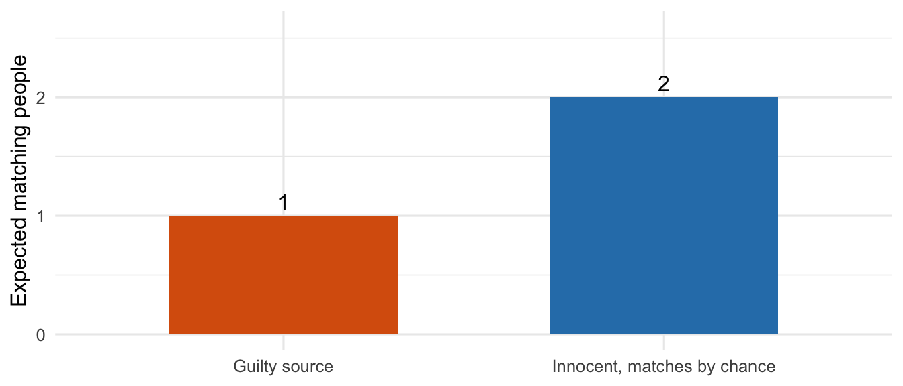
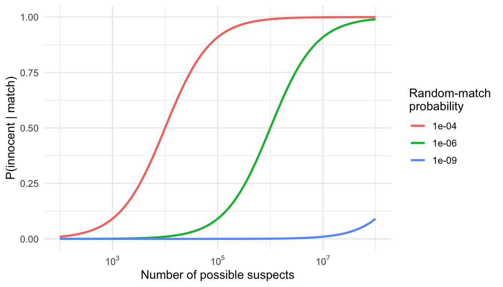

posterior_innocent <- function(prior_guilt, p_match_innocent, p_match_guilty = 1) {
num <- p_match_innocent * (1 - prior_guilt)
num / (num + p_match_guilty * prior_guilt)
}
N <- 2e6
posterior_innocent(1 / N, 1e-6)[1] 0.6666666Confusing P(evidence | innocent) with P(innocent | evidence)
Paul Milne
October 17, 2026
A forensic expert tells the court: “The DNA profile matches the defendant, and only one person in a million would match by chance.” The prosecutor concludes: “So there is only a one-in-a-million chance the defendant is innocent.”
The conclusion does not follow. It swaps a conditional probability for its converse, and the error has contributed to real miscarriages of justice.
Let \(E\) be the evidence (a DNA match) and \(I\) the event that the defendant is innocent. The expert can legitimately report
\[ P(E \mid I) = 10^{-6}, \]
the chance of a match if the defendant is innocent. The court needs a different quantity,
\[ P(I \mid E), \]
the chance the defendant is innocent given the match. These are not equal in general, any more than “most cricketers are men” means “most men are cricketers”.
\[ P(I \mid E) = \frac{P(E \mid I)\,P(I)}{P(E \mid I)\,P(I) + P(E \mid G)\,P(G)}, \]
where \(G\) is guilt. The missing ingredient is the prior \(P(I)\): how likely was this person to be the source before the match was known?
Suppose the crime happened in a city of \(N = 2{,}000{,}000\) possible suspects, and the defendant was found by trawling a database, with no other evidence. A sensible prior is that each person is equally likely to be the source, so \(P(G) = 1/N\). A true source always matches, so \(P(E \mid G) = 1\).
posterior_innocent <- function(prior_guilt, p_match_innocent, p_match_guilty = 1) {
num <- p_match_innocent * (1 - prior_guilt)
num / (num + p_match_guilty * prior_guilt)
}
N <- 2e6
posterior_innocent(1 / N, 1e-6)[1] 0.6666666The probability of innocence is about 67%, not one in a million.
The same answer is easier to see by counting people. Among 2,000,000 people:
So roughly 3 people match, and only 1 of them is guilty. Picking one matching person at random, the chance they are innocent is about \(2/3\).
tibble(
group = factor(c("Guilty source", "Innocent, matches by chance"),
levels = c("Guilty source", "Innocent, matches by chance")),
count = c(1, (N - 1) * 1e-6)
) |>
ggplot(aes(group, count, fill = group)) +
geom_col(width = 0.6, show.legend = FALSE) +
geom_text(aes(label = round(count, 2)), vjust = -0.4) +
scale_fill_manual(values = c("#d95f0e", "#2c7fb8")) +
labs(x = NULL, y = "Expected matching people") +
ylim(0, 2.6)
The match probability alone doesn’t fix the answer. It depends on how many people could plausibly have done it.
grid <- expand.grid(
pool = 10^seq(2, 8, length.out = 200),
rmp = c(1e-4, 1e-6, 1e-9)
) |>
mutate(
p_innocent = posterior_innocent(1 / pool, rmp),
rmp = factor(format(rmp, scientific = TRUE), levels = c("1e-04", "1e-06", "1e-09"))
)
ggplot(grid, aes(pool, p_innocent, colour = rmp)) +
geom_line(linewidth = 1) +
scale_x_log10(labels = scales::label_log()) +
labs(x = "Number of possible suspects", y = "P(innocent | match)",
colour = "Random-match\nprobability")
A one-in-a-million match is strong evidence when the pool is a few hundred people, and weak when it is millions. Strong evidence only becomes decisive once the prior is also taken into account.
Simulate many “crimes” in a city of \(N\) people: pick the true source, test everyone, and look at the people who match. Then ask how often a randomly chosen matching person is innocent.
trials <- 20000
innocent_matches <- rbinom(trials, N - 1, 1e-6) # innocent people who match, per crime
total_matches <- 1 + innocent_matches # the true source always matches
c(simulated_pooled = sum(innocent_matches) / sum(total_matches),
bayes = posterior_innocent(1 / N, 1e-6),
naive_prosecutor = 1e-6,
mean_per_crime = mean(innocent_matches / total_matches))simulated_pooled bayes naive_prosecutor mean_per_crime
0.6655407 0.6666666 0.0000010 0.5645903 Pooling all matching people across the simulated crimes reproduces the Bayes answer of roughly two-thirds, and is nowhere near \(10^{-6}\).
The last line is a different quantity: it averages the innocent fraction crime by crime. It comes out lower (about 0.57) because crimes with no innocent matcher count as a full 0, and averaging a ratio is not the ratio of averages. The Bayes calculation, and the question “of everyone who matches, how many are innocent?”, correspond to the pooled figure.